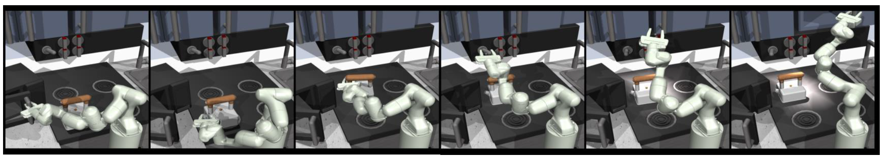
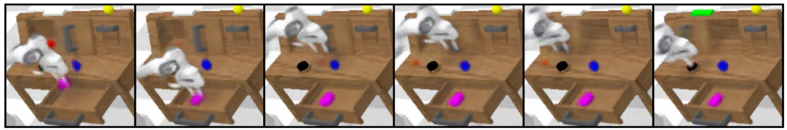

Addressing decision-making problems using sequence modeling to predict future trajectories shows promising results in recent years. In this paper, we take a step further to leverage the sequence predictive method in wider areas such as long-term planning, vision-based control, and multi-task decision-making. To this end, we propose a method to utilize a diffusion-based generative sequence model to plan a series of milestones in a latent space and to have an agent to follow the milestones to accomplish a given task. The proposed method can learn control-relevant, low-dimensional latent representations of milestones, which makes it possible to efficiently perform long-term planning and vision-based control. Furthermore, our approach exploits generation flexibility of the diffusion model, which makes it possible to plan diverse trajectories for multi-task decision-making. We demonstrate the proposed method across offline reinforcement learning (RL) benchmarks and an visual manipulation environment. The results show that our approach outperforms offline RL methods in solving long-horizon, sparse-reward tasks and multi-task problems, while also achieving the state-of-the-art performance on the most challenging vision-based manipulation benchmark.
We propose a method named Diffused Task-Agnostic Milestone Planner (DTAMP), which predicts milestones in a latent space using a diffusion model, to guide an agent to reach a given goal by following them.
Implied tasks: 'open microwave', 'move kettle', 'turn on light', 'open cabinet'
Implied tasks: 'place block in drawer', 'move slider left', 'turn on led'
The figures compare DTAMP to the other baselines in the terms of inference time and averaged score. DTAMP shows the highest averaged score & 300~1,000 times faster inference time compared to the other sequence modeling methods (TT: Trajectory Transformer, DD: Decision Diffuser).
DTAMP outperforms the other baselines and achieves state-of-the-art performance on the CALVIN benchmark tasks.
Number of tasks represents the number of tasks implied by a single goal image,
and DTAMP+Replanning represents a variant of DTAMP that allows the agent to replan the milestones during an episode.
@InProceedings{hong2023dtamp,
author = {Hong, Mineui and Kang, Minjae and Oh, Songhwai},
title = {Diffused Task-Agnostic Milestone Planner},
booktitle = {Thirty-seventh Conference on Neural Information Processing Systems (NeurIPS 2023)},
month = {December},
year = {2023}
}